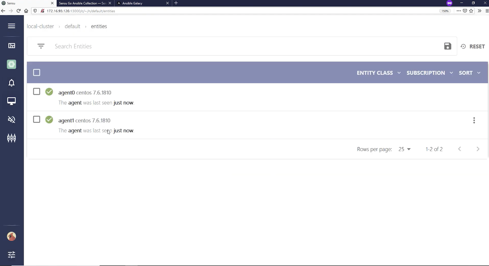
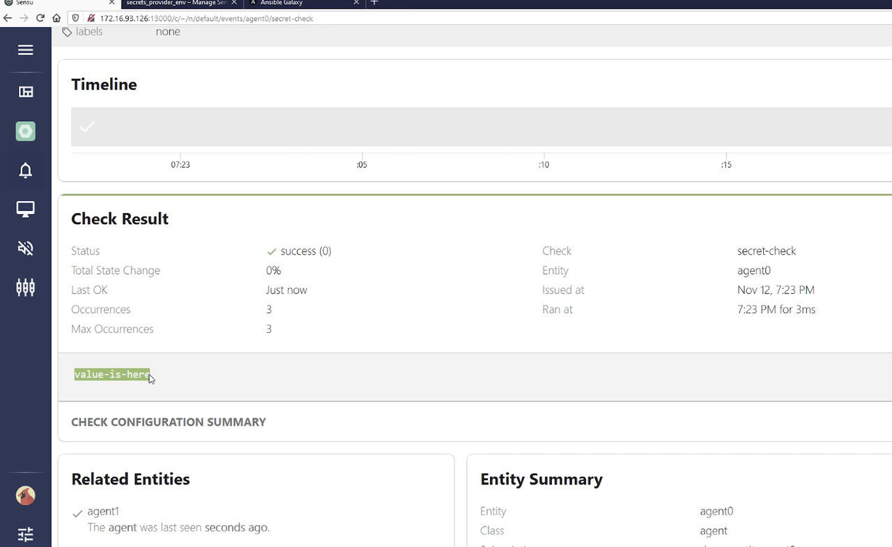

Monitoring as code with Sensu and Ansible
Monitoring as code with Sensu and Ansible
A comprehensive infrastructure as code (IaC) initiative should include monitoring and observability. Incorporating the active monitoring of the infrastructure under management results in a symbiotic relationship in which failures are detected automatically, enabling event-driven code changes and new deployments.
In this post, I'll recap a webinar I hosted with Tadej Borovšak, Ansible Evangelist at XLAB Steampunk (who we collaborated with on our certified Ansible Content Collection for Sensu Go). You'll learn how monitoring as code can serve as a feedback loop for IaC workflows, improving the overall automation solution and how to automate your monitoring with the certified Ansible Content Collection for Sensu Go (with demos!).
Before we dive in, here's a brief overview of Sensu.
About Sensu
Sensu is the turn-key observability pipeline that delivers monitoring as code on any cloud --- from bare metal to cloud native. Sensu provides a flexible observability platform for DevOps and SRE teams, allowing them to reuse their existing monitoring and observability tools, and integrates with best-of-breed solutions --- like Red Hat Ansible Automation Platform.
With Sensu, you can reuse existing tooling, like Nagios plugins, as well as monitor ephemeral, cloud-based infrastructure, like Red Hat OpenShift. Sensu helps you eliminate data silos by filling gaps in observability --- consolidating tools to bring metrics, logging, and tracing together through the same pipeline, and then distribute them as you like depending on your organizational needs. You can also automate diagnosis and self-healing, with built-in auto-remediation or integrations with products like Red Hat Ansible Automation Platform.
Why monitoring + automation?
Put simply, monitoring is what you need to be doing nearly continuously to provide actual information about failures and defects. Automation is when you take an action on something --- it's not necessarily a continuous operation. If a failure occurs and you can automate its remediation, then you're saving valuable human time.
By incorporating the active monitoring of the infrastructure under management, you benefit from a symbiotic relationship in which new metrics and failures are collected and detected automatically in response to code changes and new deployments. We define this concept as monitoring as code, and it's the key to this unified view of the world and management of the entire application lifecycle.
With monitoring as code, you're able to declare monitoring workloads in the same way you declare infrastructure as code with Ansible automation. Infrastructure as code and monitoring as code are on a parallel track, serving different purposes. With the Ansible Content Collection for Sensu Go, you can easily deploy your monitoring, spinning up the backend cluster and putting your agents into the infrastructure as part of provisioning. From there, the monitoring as code aspect takes over: you can update your monitoring without having to reprovision your existing infrastructure every time you want to make a small monitoring change.
Sensu Automation with the Ansible Content Collection for Sensu Go
The Ansible Content Collection for Sensu Go makes it easier for you to create a fully functioning automated deployment of the Sensu Go monitoring agent and backend. The following demo shows a minimal Sensu setup: how to install a backend and two agents, as well as establish a more secure connection, as we'll be passing sensitive information from the backend to the agents.
Ansible users are likely familiar with the term "inventory." In this case, our inventory file includes two defined groups: the backend group and the agent group. The information in our inventory file tells Ansible how to securely connect our hosts via SSH.
--- all: vars: ansible_ssh_common_args: > -o IdentitiesOnly=yes -o BatchMode=yes -o UserKnownHostsFile=/dev/null -o StrictHostKeyChecking=no -i demo children: backends: hosts: backend: ansible_host: 192.168.50.20 ansible_user: vagrant agents: hosts: agent0: ansible_host: 192.168.50.30 ansible_user: vagrant agent1: ansible_host: 192.168.50.31 ansible_user: vagrant
https://gist.github.com/tadeboro/00cabf8fa79f4c9c90cda8cdf9645f32#file-inventory-yaml
We also need a way to specify which state we want the resource to be in. Enter the Ansible Playbook, which we'll use to set up the backend. It's a YAML file, both human-readable and machine-executable.
--- - name: Install, configure and run Sensu backend hosts: backends become: true tasks: - name: Setup secret environment variables ansible.builtin.template: src: secrets.j2 dest: /etc/sysconfig/sensu-backend vars: secrets: MY_SECRET: value-is-here - name: Install backend include_role: name: sensu.sensu_go.backend vars: version: 6.1.0 cluster_admin_username: >- {{ lookup('ansible.builtin.env', 'SENSU_USER') }} cluster_admin_password: >- {{ lookup('ansible.builtin.env', 'SENSU_PASSWORD') }} # mTLS stuff agent_auth_cert_file: certs/backend.pem agent_auth_key_file: certs/backend-key.pem agent_auth_trusted_ca_file: certs/ca.pem
https://gist.github.com/tadeboro/00cabf8fa79f4c9c90cda8cdf9645f32#file-backend-yaml
We'll perform two main functions with this playbook:
- Setting environment variables on the backend, where we'll store sensitive information. We'll use Sensu's built-in secrets management to store and share that information securely.
- Installing and configuring the Sensu backend. For installation, we'll use the backend Ansible Role, and parameterize it using the variables specified in our file. In this example, we specify what URL to install, how to initialize the database, and how to set up the secure connection that we need to secure communications between the backend and agent.
It's worth noting that this example shows how to keep sensitive information out of your playbooks, making them completely safe to share and commit into your version control system.
We'll enter the following command to execute the playbook:
ansible-playbook -i inventory.yaml backend.yaml
Although the playbook is relatively short, what Ansible is doing is actually quite complex: adding a repository to the distribution, installing components, copying over TLS certificates, as well as configuring and initializing the backend using the username and password specified. In just under half a minute, we have a Sensu Go backend running!
We log into the Sensu web UI, but won't see anything yet because we still have to set up our agents, which we'll prepare with our agent playbook.
--- - name: Install, configure and run Sensu agent hosts: agents become: true tasks: - name: Install agent include_role: name: sensu.sensu_go.agent vars: version: 6.1.0 # mTLS stuff cert_file: certs/backend.pem key_file: certs/backend-key.pem trusted_ca_file: certs/ca.pem agent_config: name: "{{ inventory_hostname }}" backend-url: - wss://{{ hostvars['backend']['ansible_host'] }}:8081
https://gist.github.com/tadeboro/00cabf8fa79f4c9c90cda8cdf9645f32#file-agent-yaml
It's fairly similar to our backend playbook; the main differences are the host parameter and role name, as we're executing the playbook to install the Sensu agent on the host machine. With the backend playbook, we used the default configuration; with the agent, we need to specify a name so we know how to reference this agent. We also need to specify the backend location. Instead of hard-coding the address of the backend into our playbook, we tell Ansible to fetch this information from the inventory file, which allows us to reuse information we already have stored in our Ansible inventory file.
To execute the agent playbook and install the agent, I run the same command (switching out the file name):
ansible-playbook -i inventory.yaml agent.yaml
As before, Ansible takes care of everything needed to install the agent, and installation happens concurrently on both machines.
Switching over to the Sensu web UI in the default namespace, under entities, you see our two entities are ready.

Now, we need to configure an event for us to observe.
Note: as of Sensu Go 6, subscriptions can be updated on the fly, without having to restart the agent.
Here's our Sensu configuration file:
--- - name: Manage Sensu Go resources hosts: localhost gather_facts: false tasks: - name: Configure agent subscriptions sensu.sensu_go.entity: name: agent0 entity_class: agent subscriptions: - demo - name: Enable env secrets provider sensu.sensu_go.secrets_provider_env: state: present - name: Configures custom secret sensu.sensu_go.secret: name: my-secret provider: env id: MY_SECRET - name: Create a check that uses secret sensu.sensu_go.check: name: secret-check command: echo $SECRET secrets: - name: SECRET secret: my-secret subscriptions: demo interval: 10 publish: true
https://gist.github.com/tadeboro/00cabf8fa79f4c9c90cda8cdf9645f32#file-config-yaml
This is where we tell the agent to listen to the demo subscription and do whatever comes from that. To bring secrets into the check, we need to make sure our secrets provider is ready and register a secret that will fetch its value from the secret environment variable on the backend. Finally, we create a simple check that echoes our secret.
We run our config playbook:
ansible-playbook -i inventory.yaml config.yaml
Looking in the Sensu web UI, we can see our agent has gained the demo subscription. Going to events and listing all, you can see that agent-0 executed secret check and our secret value "value-is-here" makes it securely from the backend to the agent.

As you can see, our Ansible Content Collection allows you to succinctly describe your infrastructure, letting Ansible deal with the intricacies of setting things up.
Watch the full demo below:
https://www.youtube.com/watch?v=ShN867iRFvQ
Sensu demo: building a monitoring workflow
Once the Sensu platform is deployed by Ansible, we use Sensu\'s built-in configuration utility - the sensuctl CLI. With sensuctl we can manage the following Sensu API resources:
- Entity: agents + proxies
- Checks: scheduled monitoring workloads run by agents
- Observability pipelines: filter + transform + process
- Events: the base data structure Sensu Go pipeline processes
- Subscriptions: loosely couples check to entities
- Assets: shareable binaries tos support monitoring workloads; Sensu install at runtime without the need to pre-provision hosts
In this first demo, I'm building a monitoring workflow to create an NGINX service and monitor it to make sure it's up and running.
As with our earlier demo, I have a set of Ansible Playbooks that quickly create a backend and a single agent. Here, I also set up a check using sensuctl, the command-line tool for managing resources within Sensu. Both the Sensu web UI and sensuctl interact with the same REST API --- sensuctl is just another way to manage Sensu.
We provision the agent so it will communicate to the backend, and I use the Ansible Content Collection to define a new namespace just for this demo --- interacting with the Sensu API to set up a new namespace. I also set up role-based access control (RBAC), which allows me to give access to a user just for auditing (i.e., they don't need to have write access to a namespace). Then, I set up an NGINX host on the same host that the agent is running on.
With our NGINX service up and running, I set up our CLI client with
sensuctl configure --insecure-skip-tls-verify (for the purposes of this
demo; you wouldn't use this flag in production!). With sensuctl entity
list, I can see all our entities and subscriptions available (in our
demo, the webinar-agent0). We don't have any checks defined yet, so
sensuctl check list doesn't show anything. I use our declarative YAML
file to define a check command here called check-http, which is
essentially a check to make sure our NGINX service is up and running,
using Sensu's dynamic runtime
assets to
provide that command. The Ansible
handler I
use in this example has Red Hat Ansible Tower attempt remediation if
that service is down.
Now when I run sensuctl check list I see our check-http. It's in a publish state of false so we have a chance to define and test our check before running it. To run the check once, I run sensuctl execute check-http. (I have an error at first, because I need to add the asset.) You can handle all of these resources via the Ansible Collection for Sensu Go (as opposed to using sensuctl).
I set up an NTP check, making sure it's using the monitoring plugins runtime asset (which are just builds of monitoring plugins spun off from Nagios plugins). We also have our NGINX check, which is through a Ruby runtime environment that we don't have to pre-provision; the Ruby environment matches that plugin. Again, everything can be handled as part of the Ansible Collection if you want to keep everything inside of Ansible Playbooks.
The NTP and NGINX checks are in a published state running on an interval --- they don't need to be executed individually. Now, when you look at the event list, you see both checks are running. Because the runtime assets are there, these commands (like sensuctl check list) exist in the agent as part of the provisioning that was originally done, without me having to install any additional RPM packages or binaries.
And there you have it: a monitoring workflow that actually works with a service!
Watch the full demo below:
https://www.youtube.com/watch?v=ShN867iRFvQ
Go forth and automate!
Let\'s recap what we\'ve covered so far: we\'ve automated the Sensu backend and agent deployment using the Ansible Content Collection, and we\'ve created some monitoring code (e.g. check-http.yaml) to monitor a service and automate remediation with Ansible Automation Platform. Now let\'s automate management of this monitoring code by connecting it to our CI/CD pipeline via our new best practice workflow called SensuFlow. SensuFlow works with a code repository containing subdirectories of monitoring code that map to Sensu namespaces. SensuFlow provides the following automations:
- Test available of sensu-backend
- Tests provided authentication
- Optionally creates namespaces under management (if RBAC policy allows)
- Linting of resource definitions to ensure required metadata
- Prune deleted/renamed Sensu resources based on label selection criteria
- Create and/or modify Sensu resources
Getting started with SensuFlow is easy, it requires an RBAC profile (User with username and password, ClusterRole and ClusterRoleBinding), and Sensu backend API URL for configuring the Sensu CLI that will run in the CI/CD pipeline. SensuFlow also has a set of optional environment variables that let you customize several operational behaviors, such as the label selection criteria that sensuctl prune uses to delete Sensu resources no longer represented by files in the repository (e.g. if a monitoring code template is deleted or renamed).
To learn more about sensuctl prune, please check out our blog post on https://sensu.io/blog/keep-your-configs-in-good-order-with-sensuctl-prune
SensuFlow is designed to be CI/CD platform agnostic, and can be used locally in your development environment (so long as it has sensuctl, yq and jq installed). But we\'re also actively developing a reference implementation for the GitHub Action CI/CD platform that can be used with any GitHub repository. The SensuFlow GitHub Action effectively provides a direct integration between GitHub and Sensu Go!
Take a look at this monitoring as code example repository, configured to run SensuFlow GitHub action on commit into the main branch. This repository includes several Sensu resources, including the the check and handlers from the Red Hat Ansible Tower remediation example above, but now uses SensuFlow to automate changes in Sensu.
To learn more about Monitoring as Code and SensuFlow, please check out our recent blog posts and webinar on the topic:
- Monitoring as code: What it is and why you need it (blog post on The New Stack)
- Monitoring as Code with the Sensu Observability (Whitepaper)
- Practical Monitoring as Code with Sensu Go and Sensu Flow (Webinar)\
Hopefully this post gave you an idea of what you can do with the monitoring as code concept as well as the Ansible Collection for Sensu Go. For further learning, check out our webinar on self-healing workflows with the Sensu Ansible Tower integration.